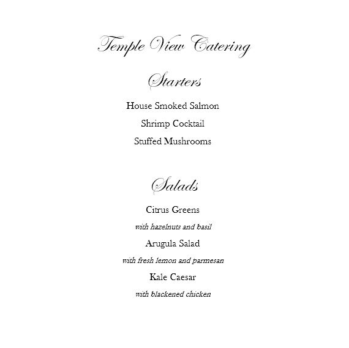
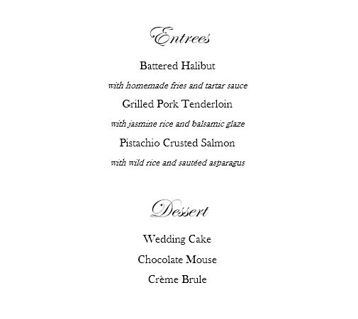

Reception Hall
Wedding Receptions
We have a beautiful reception room that is ideal for wedding receptions. We have a temple history themed. The reception and sitting areas are decorated with a temple history theme. Our wedding planners can help with all of the details to make your day stress free. Our staff will set up your wedding and can provide full banquets from our food services. See sample menu below.

